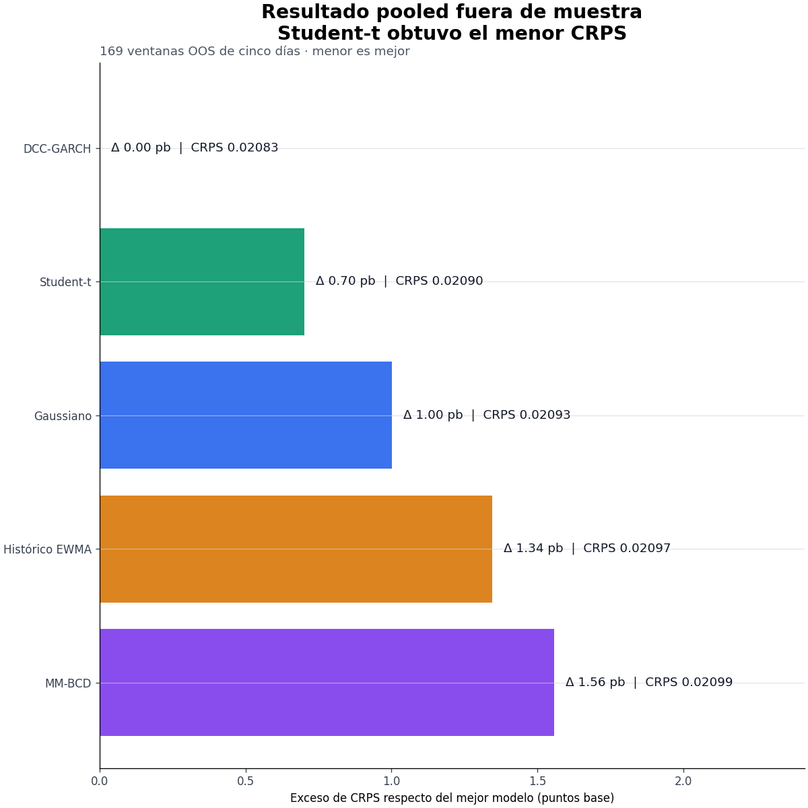
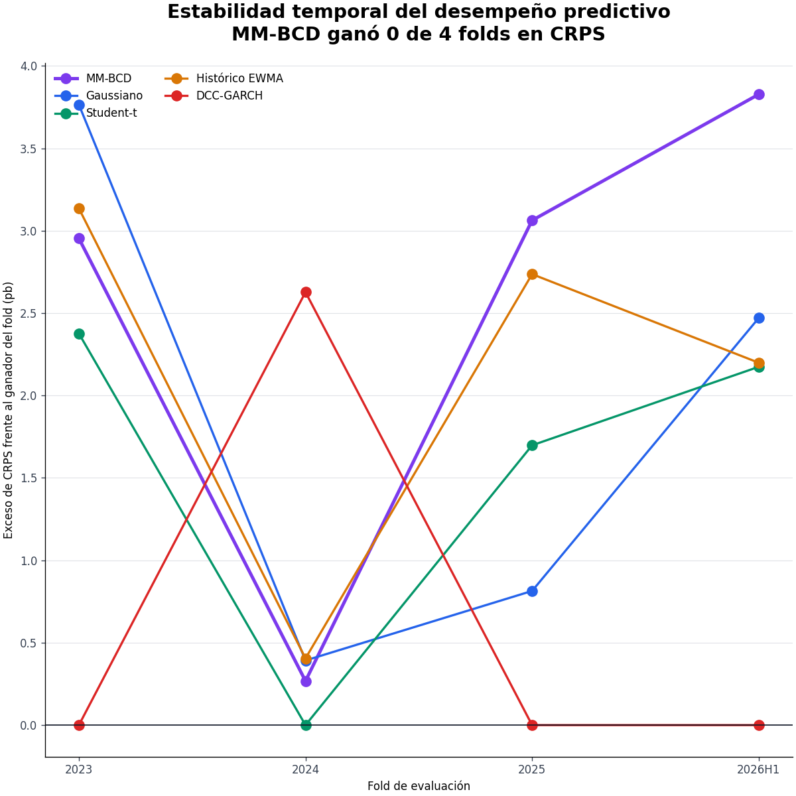
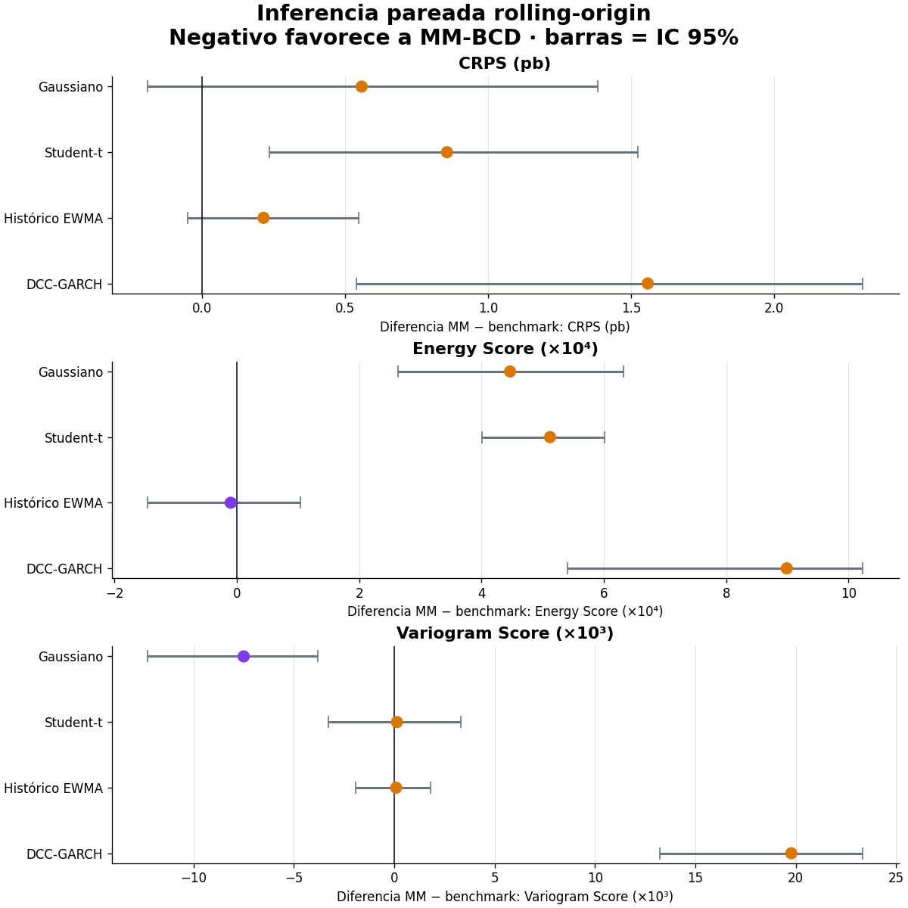
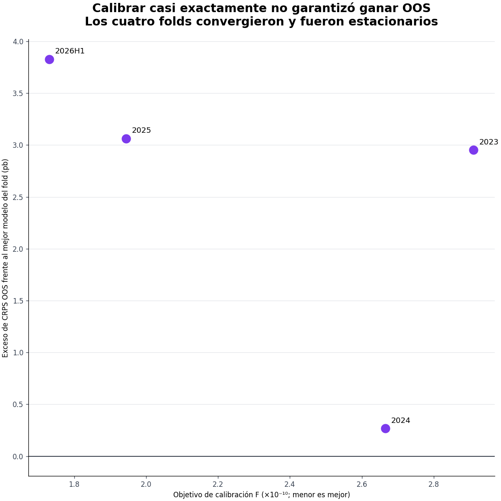

Research release · v0.7.0 · validación de desarrollo
Investigación reproducible sobre si una distribución discreta MM-BCD mejora pronósticos probabilísticos y decisiones de portafolio en acciones chilenas.
MM-BCD ajusta los momentos con gran precisión y logra la mejor calibración de dispersión, pero no muestra superioridad predictiva. DCC-GARCH domina las tres reglas de scoring y es el único modelo dentro del Model Confidence Set al 95% en Energy y Variogram Score.
| Modelo | CRPS | Energy | Variogram |
|---|---|---|---|
| DCC-GARCH | 0.020834 | 0.100393 | 0.634607 |
| Student-t | 0.020904 | 0.100780 | 0.654249 |
| Gaussiano | 0.020934 | 0.100845 | 0.661880 |
| Histórico EWMA | 0.020969 | 0.101302 | 0.654289 |
| MM-BCD | 0.020990 | 0.101292 | 0.654383 |




Todos los modelos se recalibran en cada origen con ventana expansiva. La evaluación usa retornos terminales no solapados, bootstrap temporal por bloques y ajuste de Holm. El pipeline conserva calidad raw, configuración, hashes, linaje y un snapshot auditable.
Las fechas ya fueron observadas durante el desarrollo. Los resultados son evidencia retrospectiva reproducible, no un test futuro sellado ni una recomendación de inversión.